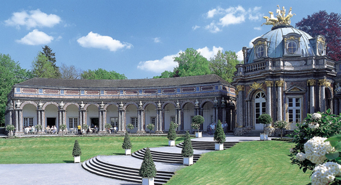
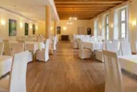
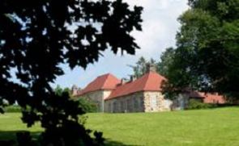

A Seminar Gala Dinner will be held on Monday, March 5, 2012 at 19:30 in the Schlossgaststätte Eremitage in Bayreuth.
In the framework of special arrangements for the seminar participants, the restaurant estimates the cost of the dinner to be about 50,- € per person. The restaurant kindly asks its future guests to indicate, through the Seminar Registration form, any preferences regarding the meal for the dinner (vegetarian, etc.) - this would help them plan accordingly.
|  |  |
The address of the Banquet site and its position on the map are shown below.
Schlossgaststätte Eremitage
Eremitage 6
95448 Bayreuth
For those participants who will require a ride, transportation to/from the Schlossgaststätte Eremitage will be provided.